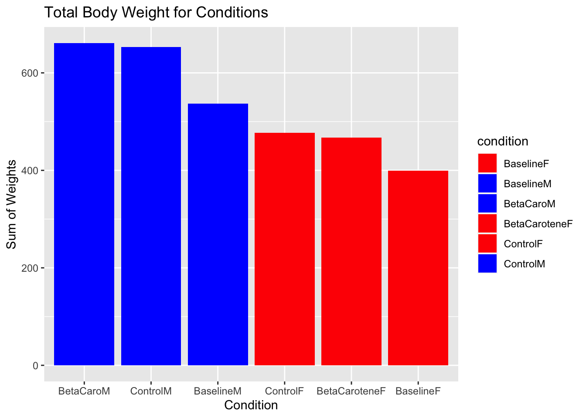

#Path to data. Note the use of the here() package and not absolute pathsfigdata <- here::here("data","processed_data","processeddata.rds")#load dataexplorfigdata <-readRDS(figdata)
Data exploration through tables
Showing a bit of code to produce and save a summary table.
── Data Summary ────────────────────────
Values
Name explorfigdata
Number of rows 19
Number of columns 7
_______________________
Column type frequency:
character 6
numeric 1
________________________
Group variables None
── Variable type: character ────────────────────────────────────────────────────
skim_variable n_missing complete_rate min max empty n_unique whitespace
1 BaselineF 3 0.842 2 18 0 16 0
2 ControlF 0 1 2 18 0 19 0
3 BetaCaroteneF 0 1 2 18 0 19 0
4 BaselineM 3 0.842 4 18 0 16 0
5 ControlM 0 1 2 18 0 19 0
6 BetaCaroM 0 1 2 18 0 19 0
── Variable type: numeric ──────────────────────────────────────────────────────
skim_variable n_missing complete_rate mean sd p0 p25 p50 p75 p100 hist
1 Week 0 1 10 5.63 1 5.5 10 14.5 19 ▇▇▆▇▇
# save to filesummarytable_elife =here("results", "summarytable.rds")saveRDS(summary_explorfigdata, file = summarytable_elife)
We are saving the results to the results folder. Depending on how many tables/figures you have, it might make sense to have separate folders for each. And/or you could have separate folders for exploratory tables/figures and for final tables/figures. Just choose a setup that makes sense for your project and works for you, and provide enough documentation that someone can understand what you are doing.
Data exploration through figures
Here, I have created code that develops a bar graph to visualize the distribution of body weight in each condition. This will show the essential volume of body weight throughout the 16 weeks. This will not not be reliable for inferences but essential for drawing a baseline.
Total Weights
# Convert columns to numeric if neededexplorfigdata <-mutate_all(explorfigdata, as.numeric)# Remove the "Week" variableexplorfigdata1 <-select(explorfigdata, -Week)# Reshape the data and calculate sum for each conditionexplorfigdata_long <- explorfigdata1 %>%gather(condition, value) %>%filter(!is.na(value)) %>%# Remove NA values if anygroup_by(condition) %>%summarise(sum_value =sum(value))# Create Bar Graph for Visualizationbar1 <-ggplot(explorfigdata_long, aes(x =fct_reorder(condition, desc(sum_value)), y = sum_value, fill = condition)) +geom_col() +scale_fill_manual(values =c("red", "blue", "blue", "red", "red", "blue")) +# Fill colorsscale_color_manual(values =c("red", "blue", "blue", "red", "red", "blue")) +# Border colorslabs(title ="Total Body Weight for Conditions",x ="Condition", y ="Sum of Weights")plot(bar1)

# Saving the plot as an image filefigure_file =here("results","condition_distro.png")ggsave(filename = figure_file, plot=bar1)
Saving 7 x 5 in image
I color coded for male and female stratified conditions. Here, we see that the beta-carotene condition for males has the highest overall total body weight, while the baseline female condition has the lowest weight.
Weight over time
# Reshape data to long formatlibrary(tidyr)body_weights_long <-pivot_longer(explorfigdata, -Week, names_to ="Category", values_to ="BodyWeight")summary(body_weights_long)
Week Category BodyWeight
Min. : 1 Length:114 Min. :16.65
1st Qu.: 5 Class :character 1st Qu.:23.99
Median :10 Mode :character Median :28.90
Mean :10 Mean :29.58
3rd Qu.:15 3rd Qu.:35.45
Max. :19 Max. :42.57
NA's :6
# Plot the datalibrary(ggplot2)ggplot(body_weights_long, aes(x = Week, y = BodyWeight, color = Category)) +geom_line() +labs(title ="Comparison of Body Weight Changes Across Categories",x ="Week", y ="Body Weight") +theme_minimal()
With some final exploration. We look at the change in body weight over the 16 weeks. We see that males start and finish with higher body weights as expected. Of note, we see that the control and Beta-Carotene condition for female mice ends with the lowest body weights.